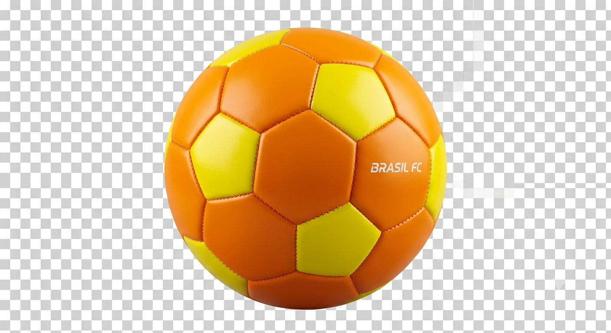

Rankings, opiniões e grandes nomes da história do futebol.

Meu Ranking Pessoal
Neste site compartilho meus rankings e opiniões sobre
alguns dos maiores jogadores e atletas do futebol.
🧤 Goleiros
A posição de goleiro é uma das mais importantes do futebol.
Enquanto os jogadores de linha buscam criar jogadas e marcar
gols, o goleiro tem a responsabilidade de proteger sua equipe.
Thibaut Courtois (Real Madrid / Bélgica)
Gianluigi Donnarumma (PSG / Itália)
Alisson Becker (Liverpool / Brasil)
David Raya (Arsenal / Espanha)
Mike Maignan (AC Milan / França)
Dibu Martínez (Aston Villa / Argentina)
Diogo Costa (FC Porto / Portugal)
Ederson (Manchester City / Brasil)
Jan Oblak (Atlético de Madrid / Eslovênia)
Unai Simón (Athletic Bilbao / Espanha)
👑 Jogadores de Linha
Este é o meu ranking pessoal dos maiores jogadores da história do futebol:
Pelé - Brasil
Lionel Messi - Argentina
Diego Maradona - Argentina
Cristiano Ronaldo - Portugal
Johan Cruyff - Holanda
Zinedine Zidane - França
Ronaldo Nazário - Brasil
Franz Beckenbauer - Alemanha
Ronaldinho Gaúcho - Brasil
Neymar Jr. - Brasil
🔥 Neymar é subestimado?
Na minha opinião, Neymar é um dos jogadores brasileiros mais
talentosos da sua geração. Sua criatividade e habilidade fazem dele um jogador especial.
Muitas pessoas avaliam sua carreira apenas pelos títulos, mas seu talento merece ser reconhecido.
🐐 Pelé, Messi ou Cristiano?
Essa é uma das maiores discussões do futebol. Pelé marcou a
história, Messi impressiona pelo talento de criar jogadas e Cristiano pela dedicação.
🇧🇷 Seleção Brasileira
O Brasil continua sendo um dos países que mais revela jogadores
talentosos no futebol mundial.
O desafio atual é transformar esse talento individual em uma equipe organizada para competir no topo.
⚽ Antigo x Moderno
O futebol moderno é mais rápido, físico e organizado. Por outro lado, o futebol antigo esbanjava criatividade pura.